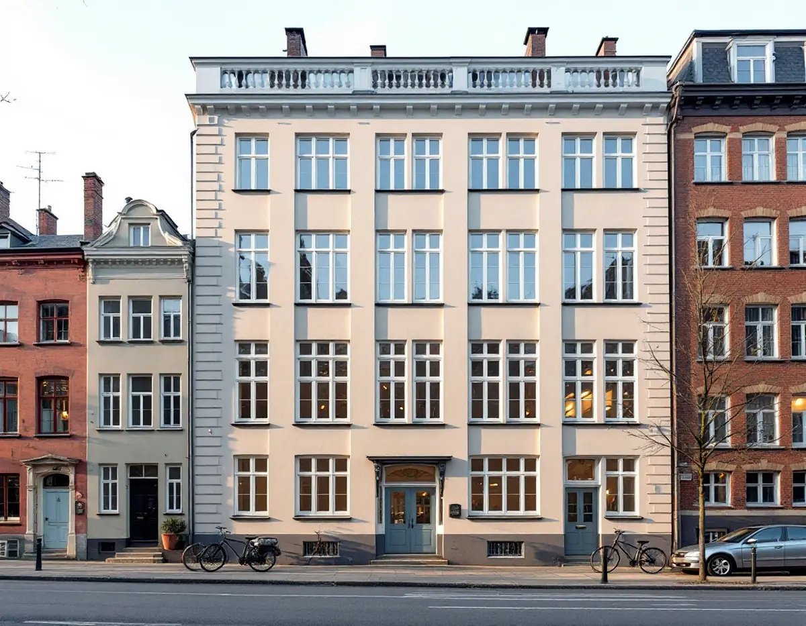
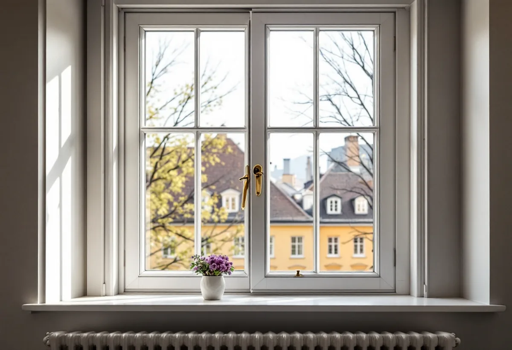
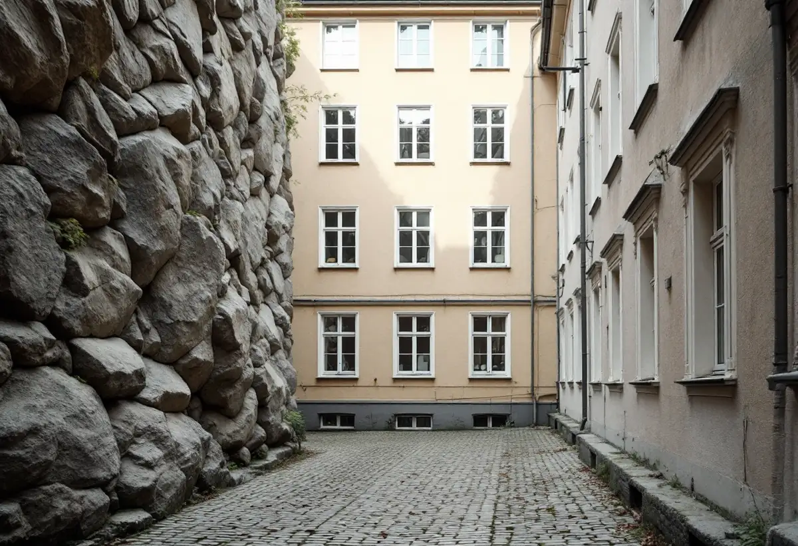

Fönster för fönster
Vi öppnar varje båge och kontrollerar spanjolett, kopplingsbeslag och kitt.
Birkastaden byggdes på kort tid i början av 1900-talet, och enligt Stadsmuseets inventering hade fasaderna i stort sett kvar sin ursprungliga utformning. Geal Entreprenad AB renoverar fönster i Vasastan – i lägenheter och åt föreningar – och utgår från hur fönstren i just det huset en gång utformades.

Stockholms stadsmuseum inventerade Birkastaden, Röda Bergen och Rörstrand 1973. Gatorna i Birkastaden lades in på stadsplanen för Norrmalm 1879 och på regleringsplanen 1886, och större delen av området bebyggdes 1902–12. Arkitekten A J Höög, genom firmorna Dorph & Höög och från 1910 Höög & Morssing, medverkade till 59 av områdets 148 fastigheter, ungefär 40 procent, och det är en förklaring till det enhetliga intrycket. Tre bostadshus revs under 1960-talet och ersattes med nya.
Inventeringen konstaterar att fastigheterna hade genomgått få förändringar sedan de byggdes. Många fasader hade putsats om och därmed förenklats, men i stort sett hade de kvar sin ursprungliga utformning. Där puts och dekor har förenklats kan fönstren vara en av de delar som fortfarande visar hur huset var tänkt. Höög & Morssings fyra hus i kvarteret Skålen, Karlbergsvägen 78–84, är nationalromantiska med tegelklädda fasader, gavlar, burspråk och smårutiga fönster i fasadlivet, medan 1920-talshusen i kvarteret Gjutaren mot S:t Eriksgatan har slammade putsfasader i klassicistisk anda.

Riksantikvarieämbetets skrift om fönster beskriver ett typiskt jugendfönster från sekelskiftets Stockholm. Det är mindre och relativt smalt jämfört med 1880-talets höga fönster, överdelen är spröjsad men nu främst i dekorativt syfte, och bågarna är kopplade och inåtgående. Mittposten är borta, och bågarna låses med spanjolettbeslag. Skriften visar också att spröjsarna hade försvunnit mot slutet av 1800-talet, när glasformaten blev större, och kom tillbaka kring sekelskiftet.
Stockholms stad räknar bland annat en ändrad indelning, som att lägga till spröjs eller ta bort en mittpost, och ett byte av upphängning som ändringar av fönster, och om sådana ändringar kräver bygglov beror på byggnaden. En renovering som behåller den dekorativa överdelen, de kopplade inåtgående bågarna och spanjoletten ändrar inget av detta. I överdelen finns däremot många små kittfalsar, och RAÄ påpekar att spröjsar skadas på samma sätt som bågens nederstycke – angreppen är ofta små men kan vara allvarliga eftersom spröjsarna är så klena.
Inventeringen beskriver att Birkastadens fastigheter oftast har breda gathus med flyglar och likaledes breda gårdshus, och att de så kallade T-husen med en gårdsflygel mitt på huskroppen är vanliga. Gathusen rymmer större lägenheter om två till fyra rum och kök, medan gårdshusen har mindre lägenheter med enklare snickerier. Många lägenheter i gårdshusen är mycket mörka, särskilt i kvarteren Volontären och Ugnen som ligger mot norr och vetter mot höga bergväggar och murar.
Fönstren på en och samma fastighet kan alltså sitta i helt olika lägen: mot en solig gata eller mot en skuggig gård. Vid besiktningen bedömer vi gatufasadens och gårdsfasadens fönster var för sig och noterar skicket på bottenstycken, kitt och färg per fönster. Till en förening kan kostnadsförslaget delas upp på samma sätt, så att de mest nedslitna fönstren kan prioriteras.
Stadsmuseets klassificeringskarta visar om en byggnad ligger inom ett riksintresse för kulturmiljövården eller är markerad med blått eller grönt. I så fall behöver du enligt Stockholms stad söka bygglov för åtgärder som annars kan vara bygglovsbefriade. Kartan ger en första indikation, men det finns byggnader som museet ännu inte har inventerat. I översiktsplanens beskrivning av riksintresset ingår den klassiska stenstaden med bebyggelse från 1870–1930, med utbredning på bland annat Norrmalm.
Bor du i en bostadsrätt säger bostadsrättslagen att du ska hålla lägenheten i gott skick om inte stadgarna bestämmer något annat. Skatteverket ger då rotavdrag bara för arbete på insidan av fönstren, som att måla insidan, byta glas i den inre bågen eller montera tätningslist, inte för utsidan eller arbete mellan bågarna. Om dörrar, foder och målning inomhus kan du läsa under målare i Vasastan, och om nya fönster under fönsterbyte.

Vi öppnar varje båge och kontrollerar spanjolett, kopplingsbeslag och kitt.
Vi tittar på Stadsmuseets karta och vilka delar stadgarna lägger på dig.
Gatufasad och gårdsfasad, insida och utsida redovisas var för sig.
Skadade spröjsar och bottenstycken lagas med virke av samma kvalitet.
Linoljekitt i falsarna och tunna strykningar, även på ytterbågens insida.
Vi kontrollerar att bågarna går lätt och sluter innan vi lämnar.
Skatteverket godkänner i en bostadsrätt bara arbete innanför lägenhetens tak, väggar och golv som du ansvarar för enligt stadgarna. För fönster betyder det insidan: målning, glas i den inre bågen, tätningslist, innerfönster och fönsterfoder. Äger du ett småhus gäller i stället reparation och målning av hela fönstret.
Avdraget är högst 30 procent av arbetskostnaden, högst 50 000 kr per person och år och högst 75 000 kr tillsammans med rutavdrag. Det är bara arbetskostnaden som ger avdrag. Vi drar avdraget direkt på fakturan.
Antalet fönster, hur många som har spröjsad överdel, om skadorna sitter i gathusets eller gårdshusets fönster och om bara insidan eller hela fönstret ska renoveras påverkar mest. Efter ett gratis platsbesök får du ett skriftligt kostnadsförslag.
Byta eller renovera fönster.
Fönsterbyte i Stockholm →Flytta badrummet, ny stam och frånluft.
Badrumsrenovering i Vasastan →När en lokal blir bostad.
Byggföretag i Vasastan →Ställning, tillstånd och etablering på gatan.
Fasadrenovering i Vasastan →Storgårdskvarteren och 20-talets fönster.
Fönsterbyte i Vasastan →Springor, kupning och underhåll.
Golvläggare i Vasastan →Stav- och fiskbensparkett.
Golvslipning i Vasastan →Kokvrån som blir kök.
Köksrenovering i Vasastan →Snickerier, fönster och sprucket spackel.
Målare i Vasastan →Takfönster, vindar och plåt.
Plåtslagare i Vasastan →Ny tapet på gamla putsväggar.
Tapetsering i Vasastan →Hela lägenheten, med husets värden kvar.
Totalrenovering i Vasastan →